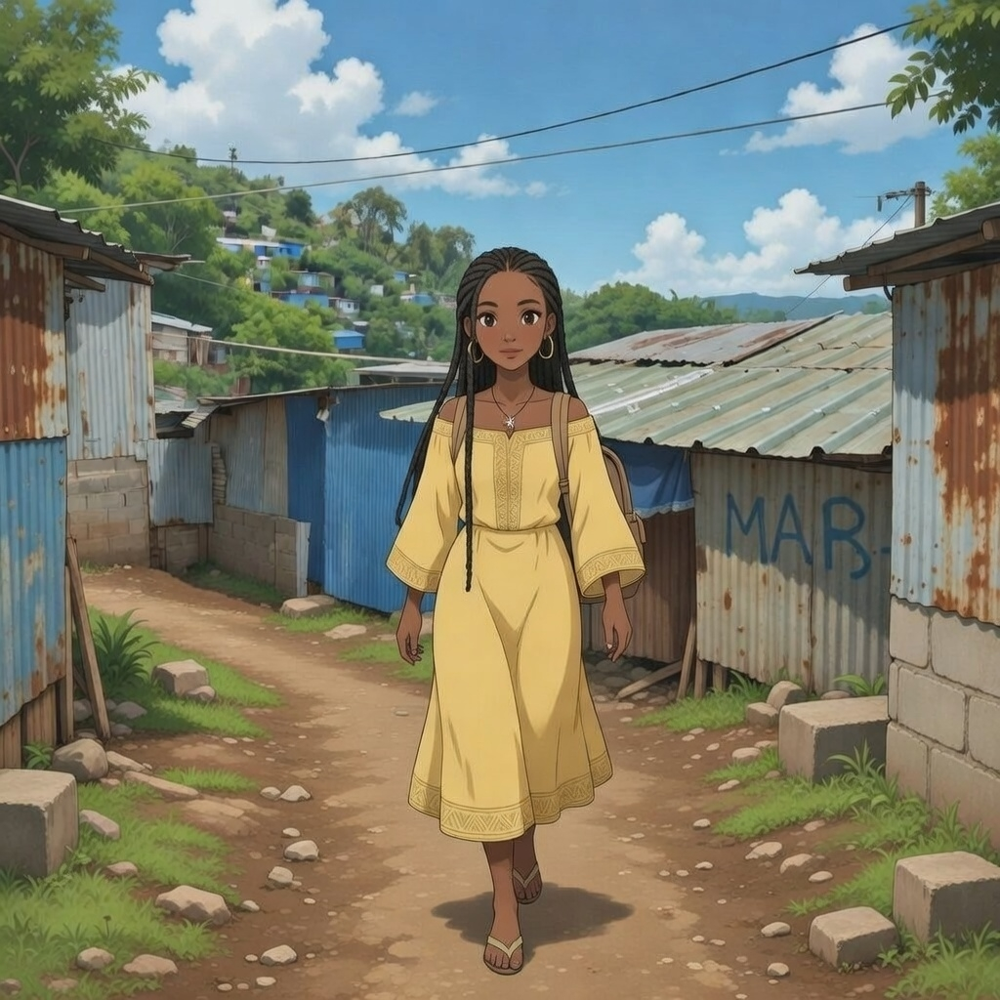
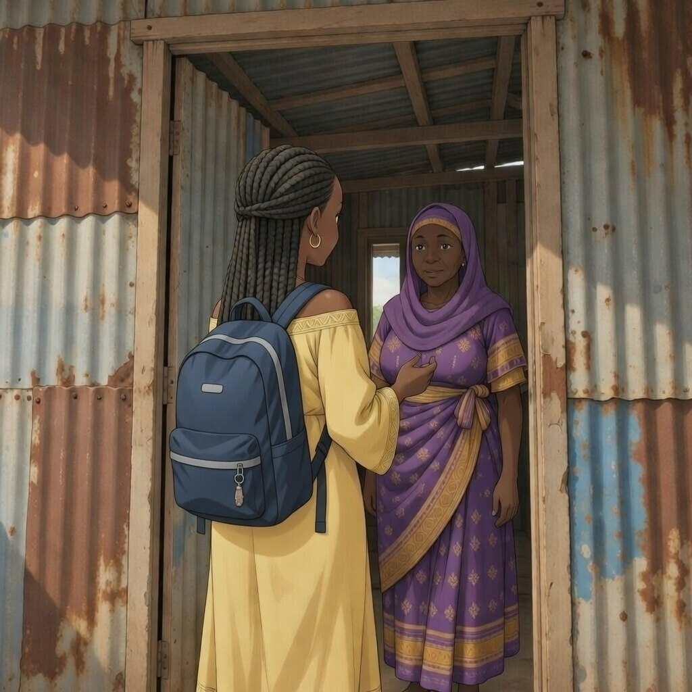
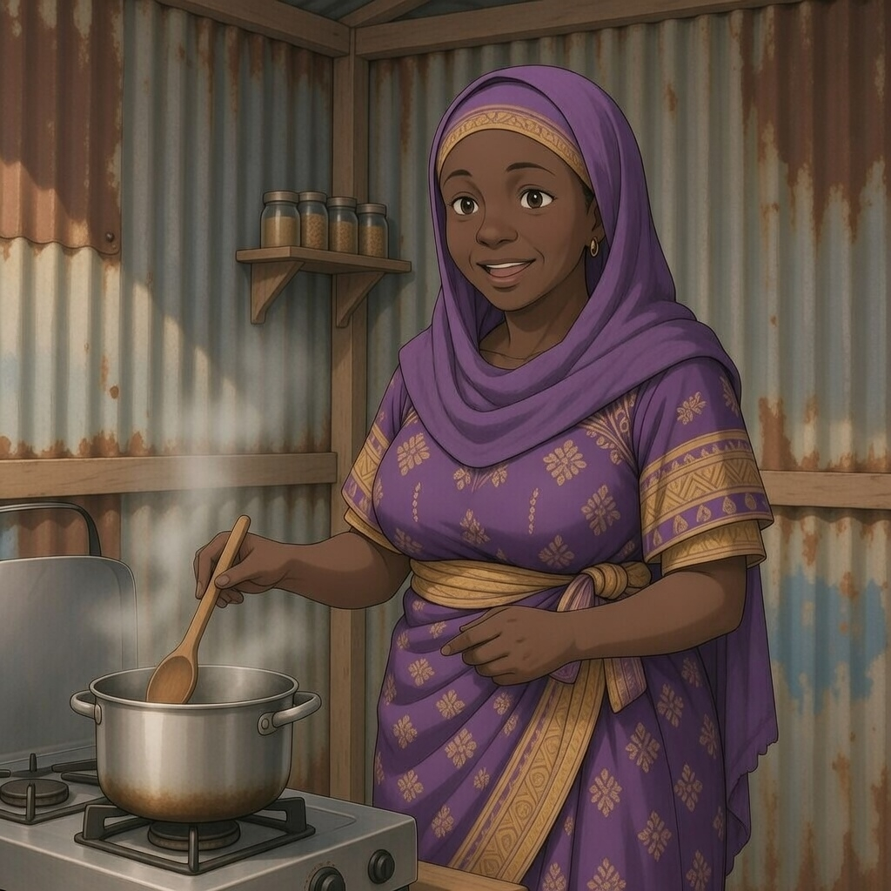
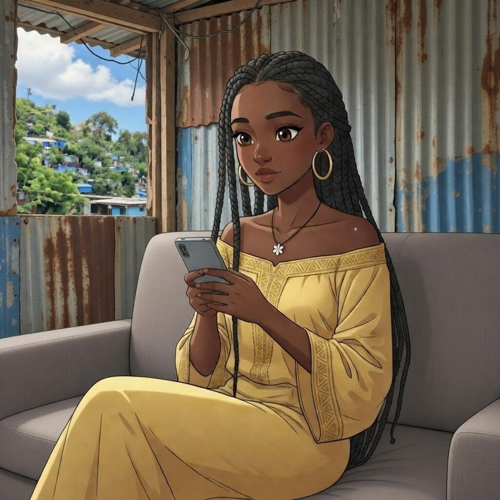
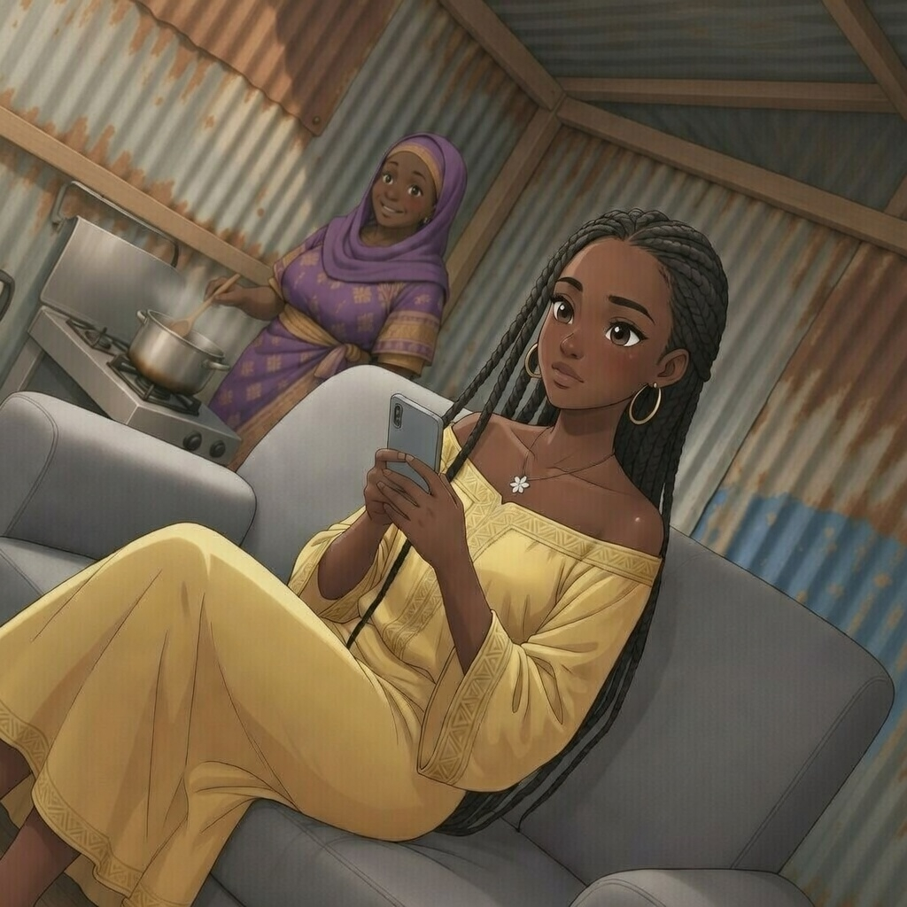
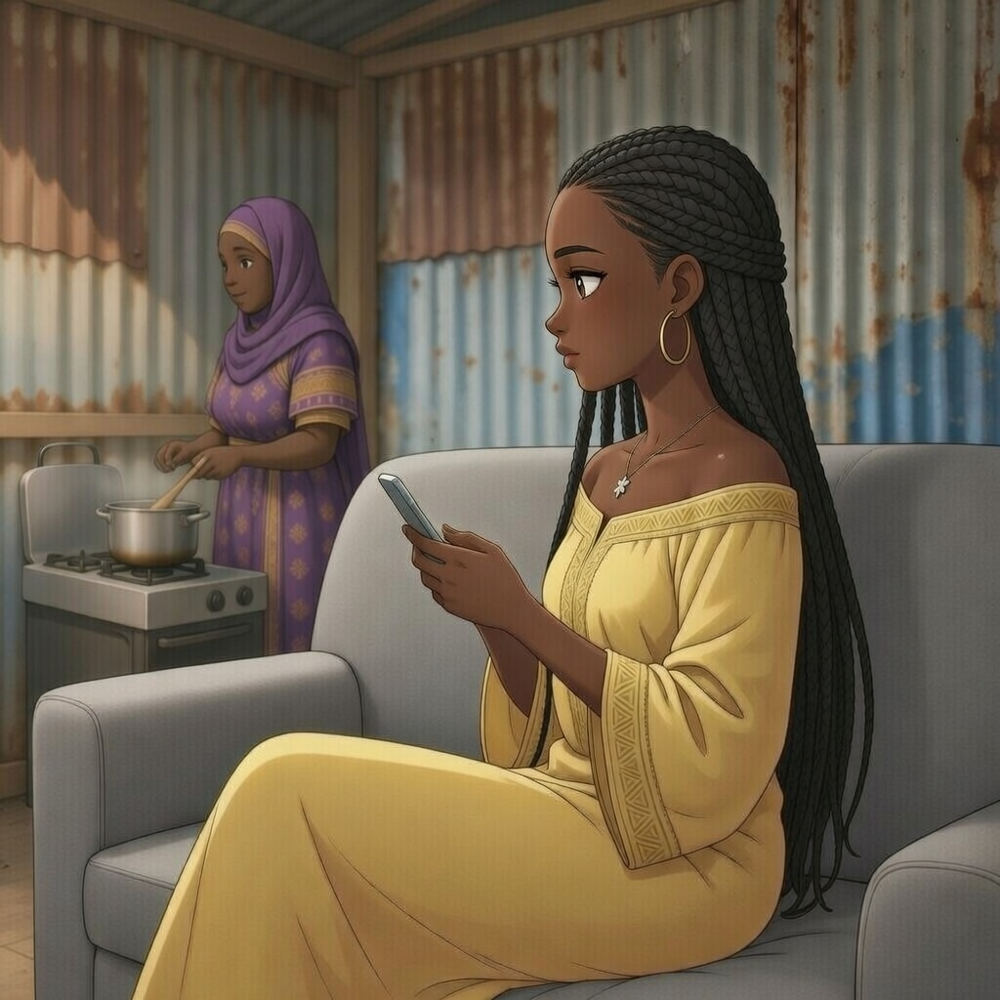
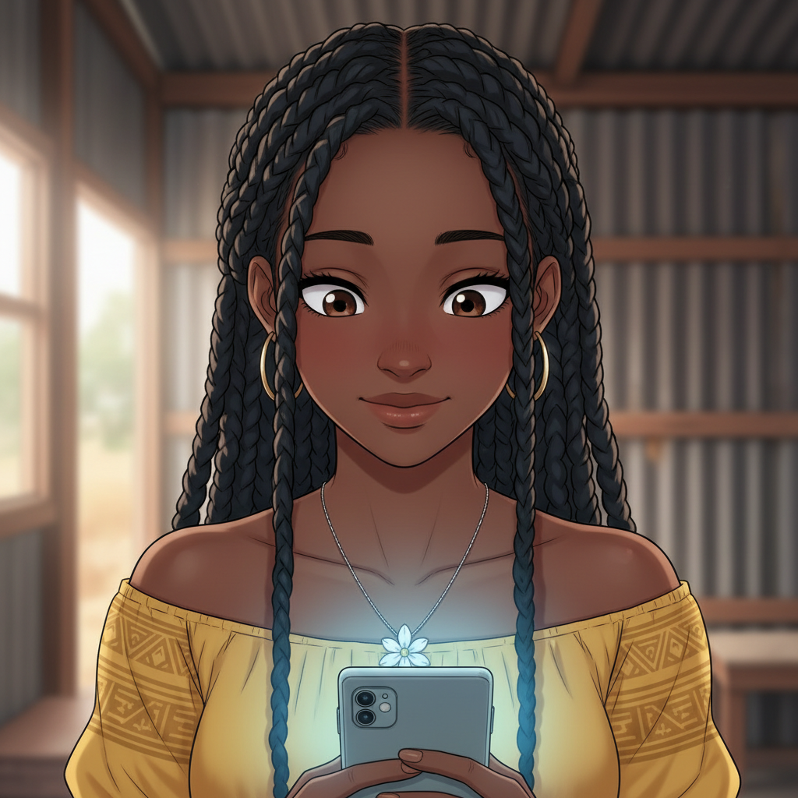
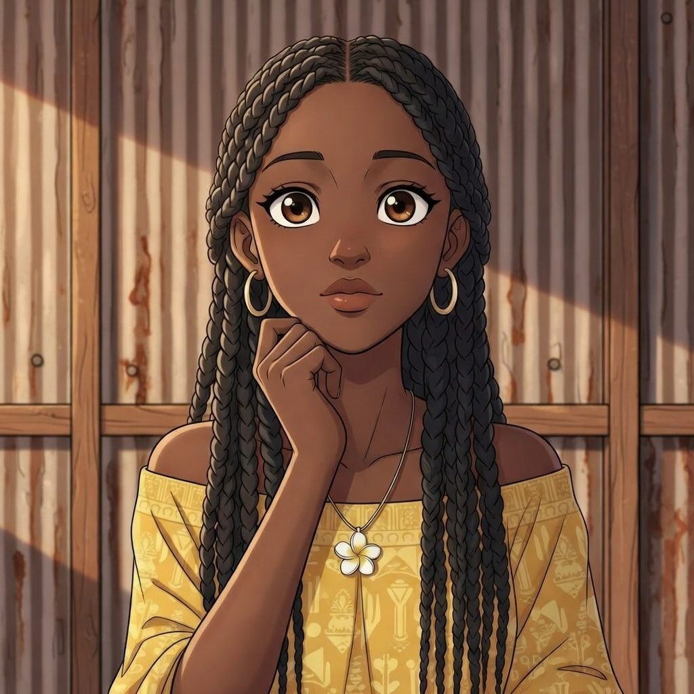
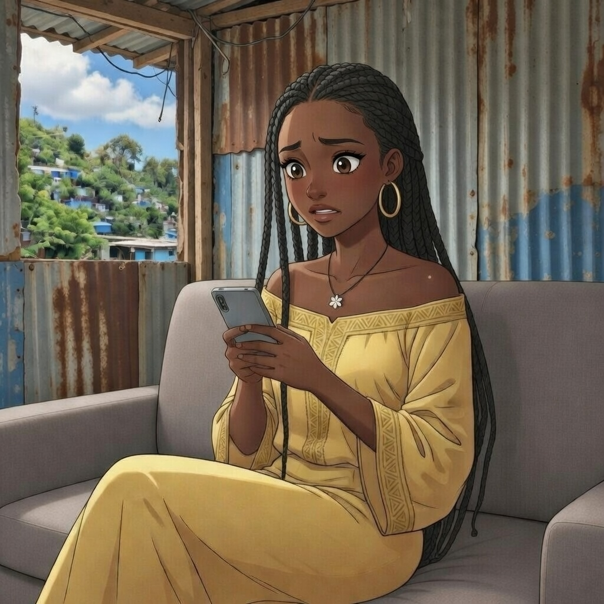

Mamoudzou, Mayotte.
Un jeudi comme les autres...

Fin de journée au lycée...

Kwezi mama !
Navoné mwanangu ! jéjé licoli ?

Va te reposer, le mataba sera prêt dans dix minutes !
TSHHH...

Voyons ce qu'il y a de nouveau...
*plop*

Comme chaque soir après les cours...
TAP TAP TAP

scroll scroll scroll
Perdue dans son écran, comme chaque soir...

🔔 @ModeQueen976
Salam ma belle 😍 ça te dirait de gagner de l'argent avec tes photos ? J'ai une appli qui paye super bien 💰

Gagner de l'argent avec mes photos ? 🤔
Ça pourrait aider maman pour les courses...

Mais c'est quoi cette appli au juste ?
...Juste regarder, ça coûte rien.
TAP